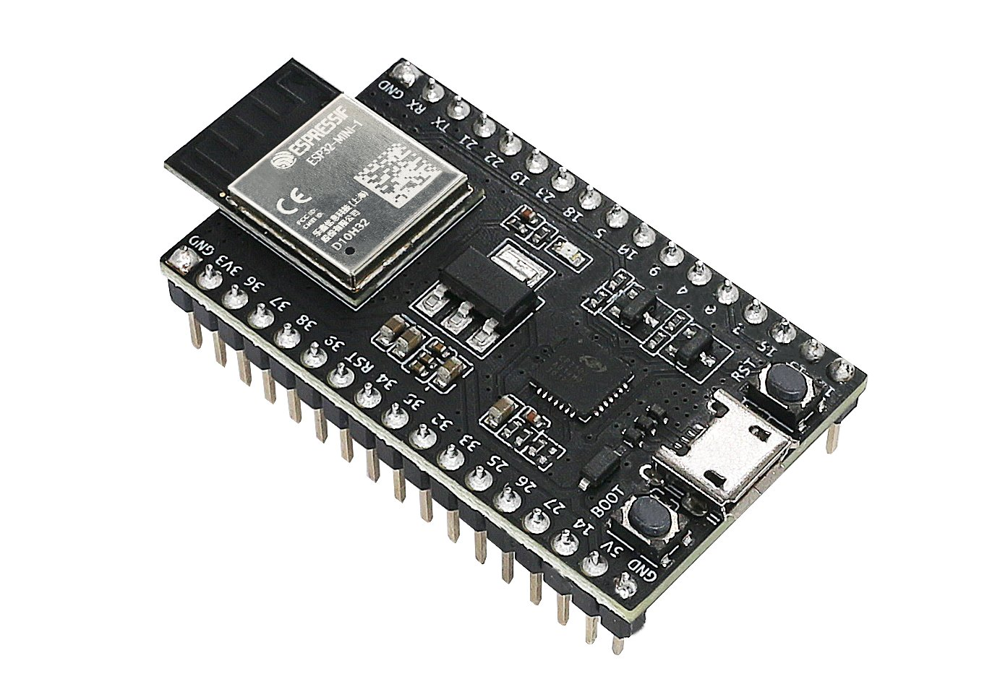
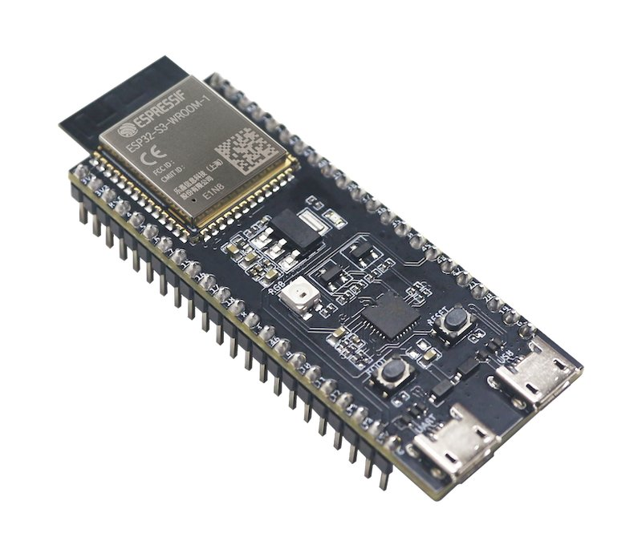
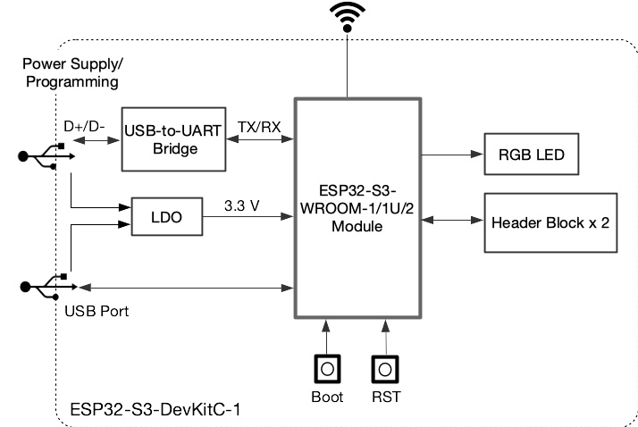

Search an online store for "ESP32" and you'll see dozens of boards with confusing names: WROOM, WROVER, DevKit V1, NodeMCU-32S, CAM, C3, S3... In this lesson you'll learn what these names mean, what each board is built for, how to identify your own board, and exactly what to buy to get started without wasting money.
🎯 After this lesson you can
- Explain the difference between a chip, a module and a development board
- Tell the members of the ESP32 family apart (original, S2, S3, C3, C6, H2)
- Recognize the common boards sold in stores and know the limits of each one
- Work out exactly which board you have, by looking at it and with a small program
- Put together a starter kit for the first chapters without buying anything you don't need, and know where the course's complete shopping list is
🧰 Prerequisites and materials
- Lesson 1.1 (What is the ESP32?)
- If you have a board: the board, a USB cable and a magnifying glass or your phone's camera
- Your results from exercise 2 of lesson 1.1 (the parts you found on your board)
Chip, module, board: three layers of one thing
On the market, the word "ESP32" is used for three different things, and that's what makes it confusing. Let's work from the inside out:
- Chip (or SoC). A black square about 5 or 6 millimeters across. It's the brain itself, but it can't work on its own: it has no flash memory, clock crystal or antenna. Only factories work with it directly. Example:
ESP32-D0WD-V3. - Module. Chip + flash + crystal + antenna + radio parts, under a metal shield, on a small board about 18 by 25 millimeters. Modules carry radio certifications (such as FCC and CE); that's why companies making commercial products buy modules, so they don't have to deal with radio design themselves. Examples:
ESP32-WROOM-32E,ESP32-WROVER-E. - Development board (or DevKit). Module + USB converter + 3.3 V regulator + EN and BOOT buttons + male pins that plug into a breadboard. This is what you buy. Examples:
ESP32-DevKitC V4,DOIT ESP32 DevKit V1.
The chip is like an engine block: the heart of it all, but it won't run without a starter, a fuel tank and a radiator. The module is like a complete engine that the factory delivers ready to install, with all its accessories. The development board is like a complete car: it has a steering wheel, seats and an ignition key, and you just get in. A car maker buys complete engines; you, wanting to learn to drive, buy a complete car.
Because two boards with the same module can have completely different pin layouts, USB converters and even buttons that behave differently. When a tutorial says "pin D4", you need to know which board that tutorial was written for, not just which chip.
The ESP32 family: there isn't just one ESP32
After the success of the original ESP32 (2016), Espressif made several more chips with the ESP32 name plus a suffix. These are not newer or better versions of the original ESP32; each one is designed for a different purpose, and some of them lack features the original ESP32 has.
| Feature | ESP32 (original) | ESP32-S2 | ESP32-S3 | ESP32-C3 | ESP32-C6 | ESP32-H2 |
|---|---|---|---|---|---|---|
| Cores | 2 | 1 | 2 | 1 | 1 (+ one low-power core) | 1 |
| Architecture and speed | Xtensa LX6, 240 MHz | Xtensa LX7, 240 | Xtensa LX7, 240 | RISC-V, 160 | RISC-V, 160 | RISC-V, 96 |
| Wi-Fi | ✅ Wi-Fi 4 | ✅ Wi-Fi 4 | ✅ Wi-Fi 4 | ✅ Wi-Fi 4 | ✅ Wi-Fi 6 | ❌ |
| Bluetooth Classic | ✅ | ❌ | ❌ | ❌ | ❌ | ❌ |
| BLE | ✅ (4.2) | ❌ | ✅ (5) | ✅ (5) | ✅ (5) | ✅ (5) |
| Zigbee / Thread | ❌ | ❌ | ❌ | ❌ | ✅ | ✅ |
| GPIOs on the chip | 34 | 43 | 45 | 22 | 30 | 19 |
| ADC | 18 channels | 20 channels | 20 channels | 6 channels | 7 channels | 5 channels |
| DAC | ✅ 2 | ✅ 2 | ❌ | ❌ | ❌ | ❌ |
| Touch | ✅ 10 | ✅ 14 | ✅ 14 | ❌ | ❌ | ❌ |
| Built-in (native) USB | ❌ (needs a converter) | ✅ OTG | ✅ OTG + serial | ✅ serial/JTAG only | ✅ serial/JTAG only | ✅ serial/JTAG only |
| External PSRAM | ✅ (WROVER) | ✅ | ✅ (up to 8 MB Octal on some modules) | ❌ | ❌ | ❌ |
| Typical use | All-rounder; best for learning | USB gadgets, no Bluetooth | Cameras, audio, small AI, displays | Simple, cheap sensors with Wi-Fi and BLE | Matter smart home, Wi-Fi 6 | Zigbee/Thread networks without Wi-Fi |
Source: Espressif's official datasheets. For an up-to-date comparison, see the official Espressif Product Selector tool.
Wrong! The ESP32-S3 and C3 have no Bluetooth Classic. That means the BluetoothSerial library (which we use in lesson 4.3 to send messages to an Android phone) won't compile for them; they only have BLE. The S3 and C3 also have no DAC. That's why we chose the original ESP32 for this course: it has every feature you'll need in the lessons, all in one place.
The "architecture" is the processor's internal language, a bit like one cook working from recipes in Persian and another in English. The dish (your program) is the same; the compiler simply translates it into the right language for each processor. Xtensa is a proprietary architecture owned by Cadence, and RISC-V is an open, free architecture. When you program with Arduino, it makes almost no difference to you; the Arduino IDE picks the right compiler by itself.
The common boards, one by one
1. ESP32-DevKitC V4 (official, 38 pins)
Espressif's own reference board, whose anatomy you saw in lesson 1.1. Two rows of 19 pins, a CP2102 converter (CP2102N on newer versions), and micro-USB. This board is sold with different modules: WROOM-32E (the most common), WROOM-32UE (with a socket for an external antenna) or WROVER-E (with PSRAM). The photo below shows the WROVER-E version; the module is longer and has ESP32-WROVER-E printed on it.

D2, D3 and CMD (bottom of the left row) and CLK, D0 and D1 (bottom of the right row). These are the flash memory pins (lesson 1.3).Image: Espressif Systems, CC BY-SA 4.0The course's interactive pinout map is designed for this board (the 38-pin DevKitC). If you have a different board, the GPIO numbers are the same, but the physical position of the pins may differ.
2. DOIT ESP32 DevKit V1 (30 pins): the most common inexpensive board
This board is usually sold as "ESP32 DevKit V1" or "30-pin ESP32 WROOM-32". Its module is a WROOM-32 (or the older ESP-WROOM-32), its USB converter is a CP2102 or CH340, and it has a red power LED and a blue LED on GPIO2. It has two rows of 15 pins, which is 8 pins fewer than the DevKitC.
- Pins it doesn't have:
GPIO6toGPIO11(the flash pins, which you shouldn't use anyway, so no loss),GPIO0(only reachable through the BOOT button) and one of the GNDs. - Naming: the pins are labeled with
Dplus the GPIO number, soD4means GPIO4 andD23means GPIO23. Pins 16 and 17 are printed asRX2andTX2, and pins 1 and 3 asTX0andRX0. The 5 V power pin is calledVIN. - In the Arduino IDE: both
ESP32 Dev ModuleandDOIT ESP32 DEVKIT V1work.
3. NodeMCU-32S (38 pins)
Made by AI-Thinker, with the ESP-32S module. Its pin layout is similar to the DevKitC, but always read the exact pin order from the labels printed on the board itself. It usually has a CH340 converter and a blue LED on GPIO2. In the Arduino IDE, choose NodeMCU-32S or ESP32 Dev Module.
"NodeMCU" is also the name of an older board with the ESP8266 chip (Espressif's previous generation, with no Bluetooth and a single core). They look very similar. If the module says ESP-12E or ESP8266, it is not an ESP32 board, and most of the code in this course won't work on it. When you buy, always look for the "32" in the module's name.
4. WROVER boards: with extra PSRAM
The WROVER module is the same ESP32 plus a PSRAM chip (usually 4 or 8 MB; on the original ESP32, at most 4 MB can be used directly). PSRAM is extra external RAM: slower than the internal SRAM, but much bigger. You need it for things like camera images, audio buffers or large web pages.
On WROVER modules, pins GPIO16 and GPIO17 are connected to the PSRAM inside the module and are not free for you to use. If you load a program written for the WROOM (for example, a GPS on Serial2 using pins 16 and 17) onto a WROVER, it won't work or the board will crash. Also, to use the PSRAM in the Arduino IDE, you have to choose Enabled in the Tools › PSRAM menu.
5. ESP32-DevKitM-1 (with the small MINI-1 module)
Another official Espressif board, with the small ESP32-MINI-1 module, which has its flash inside the chip itself. In the photo below, the pins are labeled with GPIO numbers and the buttons are labeled BOOT and RST (instead of EN); a good example of how the same button can have different names on different boards.

6. ESP32-CAM (AI-Thinker): a low-cost camera
A small board with an ESP32, 4 MB of PSRAM, an OV2640 camera (2 megapixels), a microSD card slot and a bright flash LED on GPIO4. It's great for security cameras, video doorbells and time-lapse photography (lesson 5.3).

- It has no USB port! To upload a program you need a separate USB-to-TTL converter (such as an FT232 or a CP2102 with flying leads) or an ESP32-CAM-MB base board.
- It has no BOOT button: to upload, you have to connect
GPIO0to GND with a wire, reset, upload, and then remove the wire. - Sensitive power supply: the camera and Wi-Fi together draw a lot of current. Power it with 5 volts from a supply that can deliver at least 500 milliamps; otherwise you'll see the
Brownout detector was triggeredmessage. - Few free pins: if the SD card is in use, there are almost no reliable free pins left. The ESP32-CAM is made for cameras, not for projects with ten sensors.

7. ESP32-C3: small, cheap, BLE only
A single-core chip with the RISC-V architecture at 160 MHz. It has Wi-Fi and BLE 5, but no Bluetooth Classic, DAC or Touch, and only 22 GPIOs. The chip itself has a built-in USB serial/JTAG interface, so very small boards (such as the various "C3 Super Mini" boards) can be programmed without a separate USB converter. The official ESP32-C3-DevKitM-1 board (photo below) does also have a USB-to-UART converter, plus a color (RGB) LED on GPIO8.

8. ESP32-S3: the most powerful for cameras and AI
Two Xtensa LX7 cores at 240 MHz with vector instructions that speed up small neural networks and audio and image processing. It has 45 GPIOs, 14 touch pins, full built-in USB (OTG) and support for large PSRAM. But like the C3, it has no Bluetooth Classic and no DAC.


The UART port is for when you want the board to behave exactly like the original ESP32: uploading and the Serial Monitor always work, even if your program crashes. The built-in USB port can do more: the board can present itself to the computer as a keyboard, mouse or USB flash drive. But if your program breaks the USB, the port disappears and you have to put the board into download mode by hand with the BOOT button. For a beginner, the UART port is the safer choice.
A few other names you may see
- ESP32-S2: single-core with built-in USB but no Bluetooth of any kind. It's recommended less often today, because the S3 does almost everything it does, better.
- ESP32-C6: the first ESP with Wi-Fi 6 and a Zigbee/Thread radio; a good fit for smart-home products using the Matter standard.
- ESP32-H2: no Wi-Fi; only BLE and Zigbee/Thread. Made for battery-powered sensors inside a Zigbee network.
Which board for which project?
Don't pick the "newest" or "most powerful" board as your first one; pick the most common one. Buy a plain ESP32 WROOM-32 (a 30-pin DOIT DevKit V1, or a 38-pin DevKitC/NodeMCU-32S). The reason: 90 percent of tutorials, forum questions and libraries are written for this board. When you hit a problem, you'll find the answer. Save the S3 and C3 for after this course.
Exactly which board do I have? Identify it in 5 steps
- Read the text on the module. It's printed on the metal shield:
ESP32-WROOM-32,ESP32-WROOM-32E,ESP32-WROVER-E,ESP32-S3-WROOM-1,ESP32-C3-MINI-1and so on. This is the most important clue. If it saysESP-WROOM-32(with no "32" after "ESP"), it's the older version of the WROOM-32, and for you there's no difference. - Count the pins. 30 pins: most likely a DOIT DevKit V1. 38 pins: a DevKitC, a NodeMCU-32S or similar. 44 pins (two rows of 22): most likely an ESP32-S3-DevKitC-1.
- Find the USB converter chip. It's the small square chip near the USB socket:
CP2102orCP2104(Silicon Labs), orCH340C/CH9102(WCH; the CH9102 needs the separate CH343 driver). Which driver you need to install depends on this (lesson 2.1). If you don't see a converter and the board is an S3 or C3, it probably uses the chip's built-in USB. - Look at the USB socket. micro-USB (trapezoid-shaped, older) or USB-C (oval, newer). It makes no difference to how the board works, but have the right cable ready.
- Ask the board itself. Upload the program below. It's the most reliable method, because the chip doesn't lie (a seller's label might). Haven't installed the Arduino IDE yet? That's normal; installation is in lesson 2.1. For now, just read the code and the output (or press the Wokwi button below the code), and after lesson 2.1 come back and run it on your own board.
// Board ID card: model, cores, radios, flash and PSRAM
#include "esp_chip_info.h"
void setup() {
Serial.begin(115200);
delay(1000);
esp_chip_info_t info;
esp_chip_info(&info); // fill in the chip information
bool hasWifi = info.features & CHIP_FEATURE_WIFI_BGN;
bool hasBT = info.features & CHIP_FEATURE_BT; // Bluetooth Classic
bool hasBLE = info.features & CHIP_FEATURE_BLE;
Serial.println("===== Who am I? =====");
Serial.printf("Model : %s\n", ESP.getChipModel());
Serial.printf("Cores : %d\n", info.cores);
Serial.printf("Wi-Fi : %s\n", hasWifi ? "yes" : "no");
Serial.printf("BT Classic : %s\n", hasBT ? "yes" : "no");
Serial.printf("BLE : %s\n", hasBLE ? "yes" : "no");
Serial.printf("Flash : %lu MB\n", (unsigned long)(ESP.getFlashChipSize() / (1024 * 1024)));
Serial.printf("PSRAM : %lu KB\n", (unsigned long)(ESP.getPsramSize() / 1024));
}
void loop() {
// nothing to do here; everything was printed once in setup
}
- Include a header file.
#includetells the compiler to bring in the definitions from the fileesp_chip_info.h; this file is part of ESP-IDF (the foundation of Arduino-ESP32) and declares theesp_chip_infofunction. Arduino adds a lot of things automatically, but writing the include explicitly tells you where each function comes from and makes the program compile on different core versions too. - Start Serial and wait. Just like lesson 1.1: a message channel at 115200 and a one-second wait. Because all the output is printed only once, in setup, you'll miss the messages if the Serial Monitor opens late. If you see nothing, press the EN button to print them again.
- Ask the chip for its information. We create an empty "box" of type
esp_chip_info_tand hand its address (with&) to the function so it can fill it in. This pattern is common in the C language: instead of the function returning several values, we give it a box to write them all into. - Pull out the features.
info.featuresis a number in which each bit stands for one feature. The&operator (bitwise AND) checks whether that bit is set, and the result is stored in abool(true/false) variable. These three lines show exactly how the original ESP32 differs from the S3 and C3: on the original ESP32 all three are yes, while on the S3 and C3 theBT Classicline comes out no. - Printing with printf.
Serial.printfprints text with placeholders:%sstands for text and%dfor a whole number. The expressionhasWifi ? "yes" : "no"means "yes if true, otherwise no". printf squeezes several print and println calls into one line and keeps the output tidy.\nmeans "move to the next line". - Flash and PSRAM size. Both functions give the size in bytes; we convert it to megabytes and kilobytes.
%luand(unsigned long)make the number type explicit for printf. If PSRAM shows zero but you're sure your module is a WROVER, chooseEnabledin theTools › PSRAMmenu and upload again; without that option, Arduino doesn't start up the PSRAM. - An empty loop. We have nothing to repeat, but loop still has to exist. After setup, the Arduino core always calls loop; if it's missing, the program won't compile.
On a DOIT DevKit V1 or a DevKitC with a WROOM-32 module, the output looks something like this:
On an ESP32-C3, the same program shows Model : ESP32-C3, Cores : 1 and BT Classic : no. Of course, before uploading you need to have picked the right board in the Arduino IDE (for example ESP32C3 Dev Module); if you pick the wrong board, the upload tool stops with a message like This chip is ESP32-C3, not ESP32. That in itself is a way to identify the board!
You can run this program in Wokwi too and see the simulated board's "ID card". Use the same three steps as in lesson 1.1: "Open Wokwi", replace diagram.json, then paste the code into sketch.ino and press ▶. The simulator's numbers may differ from your real board.
What to buy first: the starter kit for chapters 1 and 2
You don't need to buy everything for the course at once. For the first two chapters (up to the Wokwi and button lesson), this short list is enough. It covers only the essentials, not the complete list: later chapters add sensors, a display, motors and more. The single complete, up-to-date shopping list for the whole course, with the buying stage for each part, is on the Toolbox page. Think of this table as the grocery run for tonight's dinner, and the Toolbox list as the whole month's shopping.
| Part | Quantity | Exact specs to look for | Where in the course |
|---|---|---|---|
| ESP32 board | 1 | ESP32 WROOM-32, a 30-pin DOIT DevKit V1 or a 38-pin DevKitC/NodeMCU-32S | Every lesson (the complete list adds a second board for lesson 5.2) |
| USB data cable | 1 | To match the board's socket (micro-USB or USB-C). It must be a "data" cable, not charge-only. | Every lesson |
| Breadboard | 2 | 830 holes (full size). Two of them, because wide boards don't fit on just one. | From 1.4 |
| Jumper wires | About 20 of each type | Male-to-male and male-to-female, in assorted colors | From 1.4 |
| 5 mm LEDs | At least one of each color | Red, yellow and green | 1.4, 2.2, 2.3 |
| 220 Ω resistor | 5 | Quarter watt (red, red, brown) | The LEDs in 1.4, 2.2 and 2.3 |
| 10 kΩ and 20 kΩ resistors | 2 of each | Quarter watt (10k: brown, black, orange; 20k: red, black, orange) | The voltage divider in 1.4 |
| Push button | 2 | 4 legs, 6 by 6 mm | 2.3 |
| Digital multimeter | 1 | A simple, cheap model is enough (DC voltage, resistance, continuity beep) | 1.4 and troubleshooting in every lesson |
| Optional | — | A soldering iron and solder, if the board's or a module's pin headers aren't soldered on | 1.4 |
We deliberately left out prices because they change quickly. Want to buy everything in one go? Head straight to the complete shopping list on the Toolbox page; it's the only list that covers every lesson, and buying from it in stages keeps you from wasting money.


Part images: Fritzing parts, CC BY-SA 3.0.
Buying warnings (take each one seriously)
Many cheap cables (and the cables that come with power banks and shavers) only have the two power wires and no data wires. The board powers up (the red LED is on), but the computer can't see it. A simple test: if you can copy photos from your phone to the computer with this cable, it's a data cable.
Most boards on the market are made by Chinese factories other than Espressif, and that's fine; the module inside is usually genuine. The trouble starts when the module is soldered on crooked or messily, the USB converter is an unknown chip, or the board is actually an ESP8266. Before you buy, read the text on the module in the product photo, and after you buy, run the Who_Am_I program above. If the board behaves strangely in the first few days, return it quickly.
ESP32 boards are wider than an Arduino Nano. When you place a 38-pin board over the center channel of a normal breadboard, there is usually no free hole left for a wire on one side (or both sides). The 30-pin DOIT boards are a little narrower and usually leave one free row on each side. The reliable fix: put two breadboards side by side and mount the ESP32 board across the gap between them, or remove the side power rail from one of them. That's why the shopping list has two breadboards. (You'll see how a breadboard is connected inside, and how to seat the board, step by step in lesson 1.4.)
Some boards and modules (especially OLEDs, and sometimes the ESP32 itself) are sold with the pins not yet soldered on. If you don't know how to solder yet, ask when you buy: "Are the pin headers soldered?" Soldering is a useful skill, but your first attempt shouldn't be on your main board. The right way to solder pin headers is covered in lesson 1.4.
- This video walks through the whole ESP32 family; while you watch, keep this lesson's "ESP32 family" table open next to you and tick off each row.
- Notice what the presenter says each series (S2, S3, C3, C6, H2) "adds" and what it "drops", especially Bluetooth Classic.
- When he shows the different development boards, try to guess each one from its module and pin count before he names it.
- This video is older (2020) and more specialized; save it for when you're a bit further along and want to compare the boards on the market in more detail.
- Pay attention to the criteria Andreas uses to compare them (such as current consumption and the parts on the board); these are exactly what make the difference between cheap boards.
- You don't need to understand every technical detail; the goal is to see that a "board" is more than just a "chip".
Common problems and fixes
| Symptom | Likely cause | Fix |
|---|---|---|
| The red LED is on, but there is no port in the Arduino IDE | A charge-only cable, or the CP2102/CH340 driver isn't installed | Try another cable. Read the converter chip on the board and install the right driver (lesson 2.1). |
The upload stops with This chip is ESP32-S3, not ESP32 (or similar) | The wrong board is selected in the Tools menu | Select the right board, for example ESP32S3 Dev Module. |
BluetoothSerial won't compile for the board | Your board is an S3 or C3, which has no Bluetooth Classic | Use BLE, or use an original ESP32 for that project. |
| A program that worked on a WROOM doesn't work on a WROVER with Serial2 | GPIO16 and GPIO17 are connected to the PSRAM on the WROVER | Move Serial2 to other pins (for example Serial2.begin(9600, SERIAL_8N1, 26, 32), borrowing two of the course's "swappable part" pins, because the buttons and the other fixed pins shouldn't move). |
The ESP32-CAM keeps resetting and prints Brownout detector | A weak power supply | Power it with 5 volts from a stronger supply; keep the wires short. |
| There's no room left on the breadboard for wires | The 38-pin board is wide | Use two breadboards side by side. |
Every week I see questions that start with "the code is correct but it doesn't work", and in the end it turns out the writer didn't know their board was a WROVER, or their cable was charge-only, or they bought an S3 and are looking for Bluetooth Classic. As soon as you've installed the Arduino IDE in lesson 2.1, run the Who_Am_I program on your board, write the results on a paper label and stick it on your board's box: module model, pin count, USB converter, PSRAM. Professionals know their tools.
Lesson quiz
What does the ESP32-WROOM-32 module add to the bare ESP32 chip?
- A USB-to-serial converter
- The EN and BOOT buttons
- Flash memory, a crystal and an antenna
- A 5 V to 3.3 V regulator
You want to send messages to an Android Bluetooth terminal app with the BluetoothSerial library. Which chip is right for this?
- The original ESP32 (WROOM-32)
- ESP32-S3
- ESP32-C3
- ESP32-S2
The module on your board says ESP32-WROVER-E. Which point is the most important?
- It has no Bluetooth Classic
- It runs on 5 volts
- It has built-in USB
- It has PSRAM, and GPIO16 and GPIO17 are not free
What do you need to upload a program to an ESP32-CAM (AI-Thinker)?
- Just a micro-USB cable
- A USB-to-TTL converter (or an MB base board), with GPIO0 connected to GND while uploading
- Just Wi-Fi
- Copying the program onto a microSD card
Your board powers up (the red LED is on), but the computer sees no port at all. What's the most likely cause?
- The ESP32 module is burnt out
- There is no program on the board
- The cable is charge-only, or the USB converter's driver isn't installed
- Wi-Fi is turned off
Exercises
Run the Who_Am_I program on your board (or in Wokwi). Compare the result with the five "identify your board" steps. Does what's printed on the module match the program's output? If PSRAM is zero, is your module a WROOM?
Hint
A WROOM usually has no PSRAM (zero is normal). A WROVER should show about 4 MB (a number a little under 4096 KB), as long as you've selected Tools › PSRAM › Enabled.
What should you see?
On a board with a WROOM-32 or WROOM-32E module:
===== Who am I? ===== Model : ESP32-D0WD-V3 Cores : 2 Wi-Fi : yes BT Classic : yes BLE : yes Flash : 4 MB PSRAM : 0 KB
On a board with a WROVER-E module (for example, a version with 8 MB of flash) and Tools › PSRAM › Enabled, every line is the same as above except these two:
Flash : 8 MB PSRAM : 4093 KB
- The model name depends on the chip version:
ESP32-D0WD-V3,ESP32-D0WDQ6andESP32-D0WDare all the same classic ESP32. The Flash number depends on the module too (4, 8 or 16). - The exact PSRAM number is a little under 4096 (for example 4093), because the system keeps a few kilobytes for itself.
- If nothing is printed at all, press the EN button once; the program prints everything only once, in setup.
Full answer with explanation
Compare the text on the module (step 1) with the program's output (step 5) like this:
| Text on the module | Model | Cores | BT Classic | PSRAM |
|---|---|---|---|---|
ESP32-WROOM-32 / -32E | ESP32-D0WD… | 2 | yes | 0 KB |
ESP32-WROVER-E | ESP32-D0WD-V3 | 2 | yes | About 4090 KB if you've set PSRAM to Enabled, otherwise 0 |
ESP32-S3-WROOM-1 | ESP32-S3 | 2 | no | Depends on the module variant |
ESP32-C3-MINI-1 | ESP32-C3 | 1 | no | 0 KB |
- Do they match? If the module says WROOM-32 and the program shows two cores, BT Classic = yes and zero PSRAM, everything matches. If the module says ESP32 but the upload stops with a message like
This chip is ESP32-C3, not ESP32, your board is a C3; pick the right board and try again. - Zero PSRAM means WROOM? Not necessarily. Zero has two possible causes: the module really has no PSRAM (a WROOM), or it has PSRAM but Arduino didn't switch it on. The decisive test: choose
Tools › PSRAM › Enabledand upload again. If it's still zero, the module is a WROOM; if it's now about 4090, it's a WROVER. - In Wokwi a classic dual-core ESP32 is simulated, and there's no real module to compare against; do the comparison part on a real board.
A side note: a WROVER-E module usually carries 8 MB of PSRAM, but the classic ESP32 can only see 4 MB of it directly; that's why the number is about 4090 and not 8192.
For each request, suggest a board and give one technical reason: a) "I want a cheap doorbell that sends me a photo of the visitor." b) "I want a small battery-powered button that tells my phone over BLE when it's pressed." c) "I want one board to learn this whole course with." d) "I want a gadget that plugs into a computer and types a password like a keyboard."
What should you see?
| Request | Board | Key feature your reason should mention |
|---|---|---|
| a) Doorbell with a photo | ESP32-CAM | Camera + Wi-Fi, cheap |
| b) Battery BLE button | ESP32-C3 | BLE is enough, small and cheap |
| c) Learning the course | ESP32 WROOM-32 (DevKitC or DOIT V1) | Every feature the lessons use + the most learning resources |
| d) USB keyboard | ESP32-S3 | Built-in USB (OTG) |
- If you picked the classic ESP32 for d), ask yourself: does it have built-in USB? No; it only talks to the computer through a converter chip, so it can't present itself as a keyboard.
- Other answers are acceptable if the reason is right; for example an ESP32-S3 camera board for a) (more expensive) or an ESP32-S2 for d) (it has built-in USB too).
Full answer with explanation
a) ESP32-CAM: a cheap camera and Wi-Fi on one board. b) ESP32-C3: small and cheap, it has BLE 5, and Bluetooth Classic isn't needed. c) ESP32 WROOM-32 (DevKitC or DOIT V1): it has every feature the lessons use and the most learning resources. d) ESP32-S3: it has built-in USB OTG and can present itself as a keyboard; the original ESP32 has no built-in USB.
The method: for each request, first find the "must-have" feature (camera, BLE, everything, built-in USB), then pick the cheapest member of the ESP32 family table that has it.
Using the starter kit list above, build a real shopping cart at an electronics shop or online store such as DigiKey, Mouser, Amazon or AliExpress (just the cart; you don't have to buy anything). For each part, look at the product photo and check: Is the text on the ESP32 module readable? Is the cable a "data" cable? If you also add the OLED display from the complete list on the Toolbox page, is it the I2C type (four pins) or the SPI type (seven pins)?
Hint
A seven-pin OLED (with DC, RES and CS pins) is the SPI type; in this course we use the four-pin I2C type. If the seller says nothing about the cable, ask, or buy the cable separately from a trustworthy source.
What should you see?
Your cart should contain all of these rows, and each row should pass its check:
- ESP32 board: in the product photo,
ESP32-WROOM-32(or-32E) is readable on the module, and the pin count (30 or 38) is clear from the title or the photo. - Cable: the description explicitly says "data" or "data sync", and the plug matches the board's socket (micro-USB or USB-C).
- Two 830-hole breadboards, male-to-male and male-to-female jumper wires, red/yellow/green LEDs, five 220 Ω resistors, two 10k and two 20k resistors, two 6×6 buttons, one multimeter.
- If you added an OLED: four pins labeled
GND VCC SCL SDA.
Full answer with explanation
A sample cart that passes every check:
| Part | Quantity | What you checked on the product page |
|---|---|---|
| ESP32 DevKit V1 (30 pins, WROOM-32) | 1 | Module text readable in the photo; pin headers already soldered |
| micro-USB data cable | 1 | "Data sync" in the description; the plug matches the board's socket |
| 830-hole breadboard | 2 | Full size |
| Male-to-male and male-to-female jumper wires | About 20 of each | Assorted colors |
| 5 mm LEDs | Red, yellow, green | At least one of each color |
| 220 Ω, 10k and 20k resistors | 5 / 2 / 2 | Quarter watt; or a mixed resistor kit that includes these three values |
| 4-leg 6×6 button | 2 | Four legs |
| Simple multimeter | 1 | DC voltage, resistance, continuity beep |
How to grade yourself: (1) no row from the kit table is missing. (2) For the board, you read the module name from the photo, not from the listing title. (3) The cable is explicitly a data cable; if the seller says nothing, count the cable row as "failed" and add a trustworthy data cable separately. (4) If the board or the OLED is sold without soldered pins and you can't solder yet, choose the pre-soldered version.
Practice project: a warning label for your board
Power tools come with a warning sticker: "keep fingers away from the blade". Your board deserves one too. In this lesson you learned that GPIO6 to GPIO11 belong to the flash and that a WROVER module quietly uses GPIO16 and GPIO17 for its PSRAM. Extend Who_Am_I so the board prints its own warning label, worked out from what the chip reports, before you plug a single wire into it.
Requirements
- The label starts with the ID card lines: model, cores, flash (MB) and PSRAM (KB).
- On a classic ESP32 (
info.model == CHIP_ESP32) it prints a WARNING that GPIO6 to GPIO11 belong to the flash. - If PSRAM is larger than 0, it prints a WARNING that GPIO16 and GPIO17 are wired to the PSRAM; otherwise an OK line saying they are free.
- If the chip has no Bluetooth Classic, it prints a NOTE; if it has only one core, another NOTE.
- If the flash is smaller than 4 MB, it prints a WARNING.
- The last line counts only the WARNING lines:
Total warnings: N.
Parts
- Your ESP32 board and a USB data cable, or the Wokwi simulator. No wiring.
- Optional: a second board of another kind (a WROVER, a C3) to see a different label.
Starter code
The starter already gathers all the facts and prints the ID card. You write the decisions: five if checks. An if (condition) { … } runs the lines inside the braces only when the condition is true; else { … } runs when it's false. It's new here, and it's the heart of this project: a program that decides.
// Board warning label: starter (fill in every TODO)
#include "esp_chip_info.h"
void setup() {
Serial.begin(115200);
delay(1000);
esp_chip_info_t info;
esp_chip_info(&info); // fill in the chip information
bool hasBT = info.features & CHIP_FEATURE_BT; // Bluetooth Classic
unsigned long flashMB = ESP.getFlashChipSize() / (1024 * 1024);
unsigned long psramKB = ESP.getPsramSize() / 1024;
int warnings = 0; // counts the WARNING lines
Serial.println("===== Board warning label =====");
Serial.printf("Model : %s\n", ESP.getChipModel());
Serial.printf("Cores : %d\n", info.cores);
Serial.printf("Flash : %lu MB\n", flashMB);
Serial.printf("PSRAM : %lu KB\n", psramKB);
Serial.println("----- Warnings -----");
// TODO 1: if info.model == CHIP_ESP32, warn about GPIO6 to GPIO11 (+1 warning)
// TODO 2: if psramKB > 0, warn about GPIO16 and GPIO17 (+1 warning);
// otherwise print an OK line saying they are free
// TODO 3: if there is no Bluetooth Classic (!hasBT), print a NOTE line
// TODO 4: if info.cores == 1, print a NOTE line
// TODO 5: if flashMB < 4, warn that big programs may not fit (+1 warning)
Serial.printf("Total warnings: %d\n", warnings); // already done for you
}
void loop() {
// nothing to repeat: the label is printed once, in setup
}
- The facts, ready to use. The chip info, a Bluetooth Classic flag, flash in MB, PSRAM in KB and a counter that starts at 0.
Working out each number once, into a named variable, keeps your
iflines short and readable. - The ID card. The same printf lines as Who_Am_I. A label is only useful if it also says which board it belongs to.
- Your five TODOs. Each one is one
if. The total line is already there. Until you write the checks, the total stays 0: a nice way to see that the starter compiles and runs.
Board only, no wiring. The same three steps as in lesson 1.1. Wokwi simulates a classic ESP32 without PSRAM.
Hint 1
The first check looks like this: if (info.model == CHIP_ESP32) { Serial.println("WARNING: …"); warnings = warnings + 1; }. Note the double ==: it compares; a single = would assign.
Hint 2
For "no Bluetooth Classic" use !hasBT: the ! means "not". NOTE lines don't add to the counter; only WARNING lines do.
What should you see?
On a DevKitC or DOIT board with a WROOM-32 module (and in Wokwi):
===== Board warning label ===== Model : ESP32-D0WD-V3 Cores : 2 Flash : 4 MB PSRAM : 0 KB ----- Warnings ----- WARNING: GPIO6 to GPIO11 belong to the flash. Never use them. OK: no PSRAM found, so GPIO16 and GPIO17 are free. Total warnings: 1
On a WROVER board with Tools › PSRAM › Enabled, the PSRAM line shows about 4093 KB, the OK line becomes WARNING: GPIO16 and GPIO17 are wired to the PSRAM. Do not use them. and the total is 2. On an ESP32-C3 you see Cores : 1, no GPIO6 line, both NOTE lines and Total warnings: 0.
- The model name may differ (Wokwi shows its own); the rest must match for a WROOM board.
- The total counts WARNING lines only: count them on screen and compare.
- Nothing printed? The label is printed once in setup: press EN.
Full answer with explanation
// Board warning label: the ID card plus warnings about pins you must not use
#include "esp_chip_info.h"
void setup() {
Serial.begin(115200);
delay(1000);
esp_chip_info_t info;
esp_chip_info(&info); // fill in the chip information
bool hasBT = info.features & CHIP_FEATURE_BT; // Bluetooth Classic
unsigned long flashMB = ESP.getFlashChipSize() / (1024 * 1024);
unsigned long psramKB = ESP.getPsramSize() / 1024;
int warnings = 0; // counts the WARNING lines
Serial.println("===== Board warning label =====");
Serial.printf("Model : %s\n", ESP.getChipModel());
Serial.printf("Cores : %d\n", info.cores);
Serial.printf("Flash : %lu MB\n", flashMB);
Serial.printf("PSRAM : %lu KB\n", psramKB);
Serial.println("----- Warnings -----");
if (info.model == CHIP_ESP32) { // only the classic ESP32
Serial.println("WARNING: GPIO6 to GPIO11 belong to the flash. Never use them.");
warnings = warnings + 1;
}
if (psramKB > 0) {
Serial.println("WARNING: GPIO16 and GPIO17 are wired to the PSRAM. Do not use them.");
warnings = warnings + 1;
} else {
Serial.println("OK: no PSRAM found, so GPIO16 and GPIO17 are free.");
}
if (!hasBT) {
Serial.println("NOTE: no Bluetooth Classic on this chip (BLE only).");
}
if (info.cores == 1) {
Serial.println("NOTE: single-core chip.");
}
if (flashMB < 4) {
Serial.println("WARNING: less than 4 MB of flash; big programs may not fit.");
warnings = warnings + 1;
}
Serial.printf("Total warnings: %d\n", warnings);
}
void loop() {
// nothing to repeat: the label is printed once, in setup
}
- Gather the facts. The include, the chip info, the Bluetooth Classic flag, flash and PSRAM, and a warning counter. The chip reports its own features, so the label is right for whichever board you plug in; no editing needed.
- The ID card. Model, cores, flash and PSRAM, then a separator line. Warnings mean nothing without knowing which board they describe.
- Flash pins.
CHIP_ESP32is the name ESP-IDF gives the classic ESP32. Only on this chip are GPIO6 to GPIO11 the flash pins. The S3 and C3 have their flash on other pins, so an unconditional warning would be wrong on those boards. - PSRAM pins, with else. PSRAM found: warning; otherwise a reassuring OK line.
An honest label says what is safe too. One catch: a WROVER shows 0 KB until you pick
Tools › PSRAM › Enabled, and then this line would wrongly say "free". Always compare with the text on the module (step 1 of this lesson). - Two NOTE lines.
!hasBTmeans "has no Bluetooth Classic";info.cores == 1means single-core. These are facts to know, not dangers, so they don't raise the counter. - Small flash and the total. Under 4 MB is a real limit for big programs; then the count is printed. A single number at the end lets you compare boards at a glance.
The finished label in Wokwi. Expect Total warnings: 1.
The chip is the brain, the module packages the chip with flash and an antenna, and the development board adds USB, a regulator and buttons. The original ESP32 (WROOM-32) is the only member of the family with Bluetooth Classic, a DAC and Touch all together, and it's the best choice for this course; the S3 is for cameras and AI, the C3 for cheap BLE sensors, and the CAM for photos. Before anything else, get to know your board by the text on its module, its pin count, its USB converter and the Who_Am_I program, and always have a data cable and two breadboards.